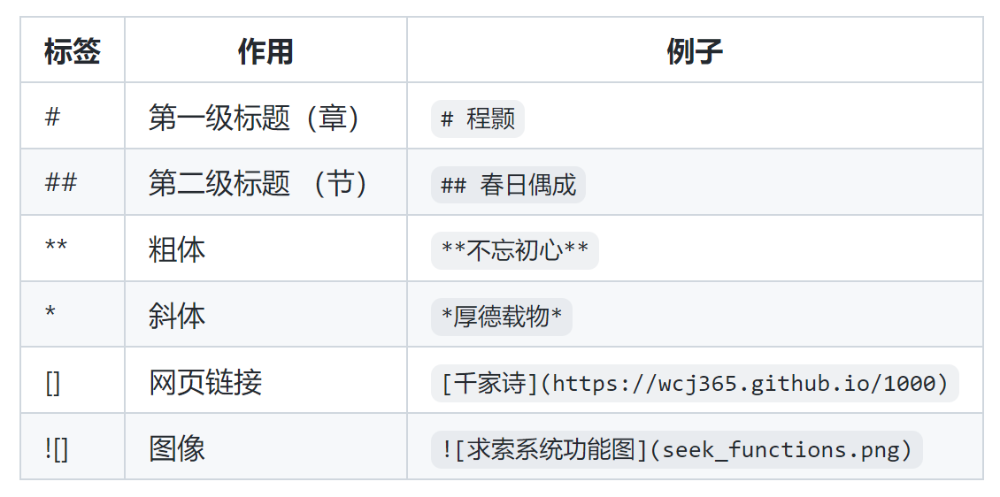

求索电子出版系统¶
求索（SEEK）由王超杰博士独立开发，其英文全称是Simply Elegant Electronic Knowledge System，简写为SEEK。
求索即可以用来为个人出版电子书籍，也可以用来为组织管理电子档案。
它的主要特点是操作简易，原始文档和生成版本都适合永久保存并，以多种方式灵活分享。
本系统是对Jupyter Book（网站生成系统）及Pandoc（文档转换系统）的无缝整合。 它利用Jupyter Book生成网站供在线阅读，并利用Pandoc生成pdf和epub版本供线下阅读。 pdf版本适用于打印阅读。epub版本适用于在平板电脑上用电子书阅读器阅读。
求索电子书的原始文档采用Markdown格式。Markdown格式和字处理软件不同，它简单容易， 在桌面（desktop） 上或终端（terminal）上用文本编辑器（text editor）即可编辑。因为不依赖任何字处理软件， 它更适合文档的永久保存。使用字处理软件生成的文档，因为字处理软件会不断更新并最终过时或消失不利于永久保存。 本系统所生成的网站是静态的基于HTML的网页，它和pdf及epub版本都比字处理软件更适合永久保存。
应用例子可以参照：
（一）系统功能¶

（二）书的结构¶
如下表所示，一本书可以包括几个辑，每一辑包含几个章，每一章包含几个节。 电子书以一章为存储单位，每一章的内容存在一个独立的文本。 属于同一辑的章放在同一个子目录。没一个辑都有自己的一个子目录。 子目录所属的根目录代表一本书。

（三）目录及文本命名规则¶
代表辑的子目录和代表章的文本，名字都要以两位数字开头。数字大小决定各个辑，各个章在书中的顺序。 比如，以下下就是【千家诗】的结构和顺序：
第一辑 七绝 (src/01_qi_jue)
第一章 程颢 (src/01_qi_jue/01.md)
第一节 【春日偶成】
第二章 朱熹 (src/01_qi_jue/02.md)
第一节【春日】
第二节【题榴花】
第二辑 七律 (src/02_qi_lv)
第三辑 五绝 (src/03_wu_jue)
第四辑 五律 (src/04_wu_lv)
（四）常用Markdown标签¶

（五）使用过程¶
初始化 (仅执行一次)
$ setup.sh
只生成网站
$ . jupyterbook.sh
只生成pdf和epub格式
$ . pandoc.sh
同时生成网站和pdf及epub格式
$ . buildall.sh